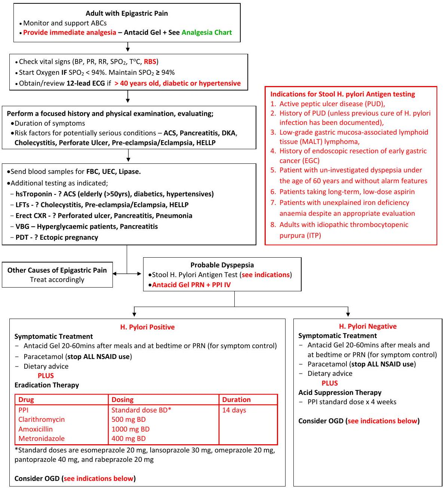

Psychiatric, GI & Poisoning
35. Suicidal & Homicidal Evaluation
This clinical pathway is intended to supplement, rather than substitute for, professional judgment and may be changed depending upon a patient's individual needs. Failure to comply with this pathway does not represent a breach of the standard of care.
1 Identification of individuals at risk may occur as a result of (1) patient disclosure; (2) reports by family, friends, or other collaterals; (3) individual indicators such as depression, substance use or debilitating illness; or (4) primary screening.
2 Consult your ED's policies to determine how medical clearance applies to this diagram.
Decision Support Tool for Secondary Screening
| TRANSITION QUESTION: CONFIRM SUICIDAL IDEATION Have you had recent thoughts of killing yourself? Is there other evidence of suicidal thoughts, such as reports from family or friends? (NOTE: Not part of scoring.) |
||
| 1 | THOUGHTS OF CARRYING OUT A PLAN Recently, have you been thinking about how you might kill yourself? If yes, consider the immediate safety needs of the patient. |
Y / N |
| 2 | SUICIDE INTENT Do you have any intention of killing yourself? |
Y / N |
| 3 | PAST SUICIDE ATTEMPT Have you ever tried to kill yourself? |
Y / N |
| 4 | SIGNIFICANT MENTAL HEALTH CONDITION Have you had treatment for mental health problems? Do you have a mental health issue that affects your ability to do things in life? |
Y / N |
| 5 | SUBSTANCE USE DISORDER Have you had four or more (female) or five or more (male) drinks on one occasion in the past month or have you used drugs or medication for non-medical reasons in the past month? Has drinking or drug use been a problem for you? |
Y / N |
| 6 | IRRITABILITY/AGITATION/AGGRESSION Recently, have you been feeling very anxious or agitated? Have you been having conflicts or getting into fights? Is there direct evidence of irritability, agitation, or aggression? |
Y / N |
Suicide Assessment Five-step Evaluation and Triage (SAFE-T)
Suicide assessments should be conducted at first contact, with any subsequent suicidal behaviour, increased ideation, or pertinent clinical change; for inpatients, prior to increasing privileges and at discharge.
1. RISK FACTORS
- Suicidal behaviour: history of prior suicide attempts, aborted suicide attempts, or self-injurious behaviour
- Current/past psychiatric disorders: especially mood disorders, psychotic disorders, alcohol/substance abuse, ADHD, TBI, PTSD, Cluster B personality disorders, conduct disorders (antisocial behaviour, aggression, impulsivity) Co-morbidity and recent onset of illness increase risk
- Key symptoms: anhedonia, impulsivity, hopelessness, anxiety/panic, global insomnia, command hallucinations
- Family history: of suicide, attempts, or Axis 1 psychiatric disorders requiring hospitalization
- Precipitants/stressors/Interpersonal: triggering events leading to humiliation, shame, or despair (e.g., loss of relationship, financial or health status-real or anticipated). Ongoing medical illness (esp. CNS disorders, pain). Intoxication. Family turmoil/chaos. History of physical or sexual abuse. Social isolation
- Change in treatment: discharge from psychiatric hospital, provider or treatment change
- Access to firearms
2. PROTECTIVE FACTORS
Protective factors, even if present, may not counteract significant acute risk
- Internal: ability to cope with stress, religious beliefs, frustration tolerance
- External: responsibility to children or beloved pets, positive therapeutic relationships, social supports
3. SUICIDE INQUIRY
Specific questioning about thoughts, plans, behaviours, intent
- Ideation: frequency, intensity, duration-in last 48 hours, past month, and worst ever
- Plan: timing, location, lethality, availability, preparatory acts
- Behaviours: past attempts, aborted attempts, rehearsals (tying noose, loading gun) vs. non-suicidal self-injurious actions
- Intent: extent to which the patient (1) expects to carry out the plan and (2) believes the plan/act to be lethal vs. self-injurious. Explore ambivalence: reasons to die vs. reasons to live
- * For Youths: ask parent/guardian about evidence of suicidal thoughts, plans, or behaviours, and changes in mood, behaviours, or disposition
- * Homicide Inquiry: when indicated, esp. in character disordered or paranoid males dealing with loss or humiliation. Inquire in four areas listed above
4. RISK LEVEL/INTERVENTION
Assessment of risk level is based on clinical judgment, after completing steps 1-3. Reassess as patient or environmental circumstances change
| RISK LEVEL | RISK/PROTECTIVE FACTOR | SUICIDALITY | POSSIBLE INTERVENTIONS |
|---|---|---|---|
| High | Psychiatric diagnoses with severe symptoms or acute precipitating event; protective factors not relevant | Potentially lethal suicide attempt or persistent ideation with strong intent or suicide rehearsal | Admission generally indicated unless a significant change reduces risk. Suicide precautions |
| Moderate | Multiple risk factors, few protective factors | Suicidal ideation with plan, but no intent or behaviour | Admission may be necessary depending on risk factors. Develop crisis plan. Give emergency/crisis numbers |
| Low | Modifiable risk factors, strong protective factors | Thoughts of death, no plan, intent, or behaviour | Outpatient referral, symptom reduction. Give emergency/crisis numbers |
(This chart is intended to represent a range of risk levels and interventions, not actual determinations.)
5. DOCUMENT
Risk level and rationale; treatment plan to address/reduce current risk (e.g., medication, setting, psychotherapy, E.C.T., contact with significant others, consultation); firearms instructions, if relevant; follow-up plan. For youths, treatment plan should include roles for parent/guardian.
Brief Suicide Prevention Interventions
For all patients with suicidal ideation who are being discharged:
- Provide at least one of the following brief suicide prevention interventions prior to discharge.
- Include crisis center/hotline information with every brief intervention provided.
- Involve significant other(s) in the intervention if present.
- Brief Patient Education: Discuss the condition, risk and protective factors, type of treatment and treatment options, medication instructions, home care, lethal means restriction, follow-up recommendations, and signs of a worsening condition and how to respond. Provide verbal and written information on the nearest crisis hotline.
- Safety Planning: Work with the patient to develop a list of coping strategies and resources that he or she can use during or before suicidal crises. Use the Safety Planning resources (paper version or mobile app) provided in the full guide.
- Lethal Means Counselling: Assess whether the patient has access to firearms or other lethal means (e.g., prescription medications), and discuss ways to limit access until the patient is no longer feeling suicidal. Follow the Lethal Means Counselling Recommendations for Clinicians sheet available from Means Matter.
- Rapid Referral: During the ED visit, schedule an outpatient mental health appointment for the patient within seven days of discharge. If no appointments are available, review additional suggestions in the full guide and/or refer the patient for a follow-up with a primary care provider.
- Caring Contacts: Follow up with discharged patients via postcards, letters, e-mail or text messages, or phone calls. These communications can be automated.
Discharge Planning Checklist
Involve the patient in the decision-making process. Shared decision-making lowers patient stress, gives patients a sense of control, and leads to better outcomes. Patients with suicide risk report higher satisfaction when they are involved in decisions about their care.
- Patient involved in planning
- Follow-up appointment scheduled for a date within one week of discharge
- Discharge plan reviewed verbally and understood by patient
- Barriers and solutions discussed
- Crisis center phone number provided
- Access to lethal means reviewed and discussed
- Written instructions and education materials provided, including what to do if the patient's condition worsens and when to return to the ED
- Patient confirms his or her understanding of the patient care plan
- Relevant health information transmitted to referral providers
- Patient senses the provider's care and concern
36. Management of the severely agitated or violent patient
This clinical pathway is intended to supplement, rather than substitute for, professional judgment and may be changed depending upon a patient's individual needs. Failure to comply with this pathway does not represent a breach of the standard of care.
- Ensure staff safety
- Attempt to calm patient using verbal techniques
- Place physical restraints if necessary
- Monitor, support ABCs.
SEDATION ASSESSMENT TOOL (SAT)
| SAT | Responsiveness | Speech |
|---|---|---|
| +3 | combative, violent, out of control | continual loud outbursts |
| +2 | very anxious & agitated | loud outbursts |
| +1 | anxious or restless | normal, talkative |
| 0 | awake & calm, cooperative | normal |
| -1 | asleep, rouses to voice | slurring or marked slowing |
| -2 | responds to physical stimulation | few recognisable words |
| -3 | no response to stimulation | nil |
GENERAL PRINCIPLES
- Select one sedative (benzo) and one antipsychotic agent and titrate these to a targeted SAT
- Avoid switching agents/classes as unpredictable
- Use longer acting agents where possible, to avoid the roller coaster effect of agitation/over-sedation
- If using RAPID TAKEDOWN agents, be prepared to MANAGE THE AIRWAY inc. RSI & CICO
- Assessment should occur in a designated safe area of hospital (available exits & duress alarms)
- Assess situation and patient including airway, anaesthesia and risk to self and others
- Administer medications with patient supine, one staff member to each limb and one to give drugs
- AVOID PRONE RESTRAINT
37. Epigastric Pain Algorithm
This clinical pathway is intended to supplement, rather than substitute for, professional judgment and may be changed depending upon a patient's individual needs. Failure to comply with this pathway does not represent a breach of the standard of care.
| Indications for Oesophagogastroduodenoscopy (OGD) |
|---|
|
38. Upper Gastrointestinal Bleeding Algorithm
This clinical pathway is intended to supplement, rather than substitute for, professional judgment and may be changed depending upon a patient's individual needs. Failure to comply with this pathway does not represent a breach of the standard of care.
Upper Gastrointestinal Bleeding can vary in presentation, but most cases present in one or more of four ways as follows:
- Melena (69%): the passage of dark and pitchy stools stained with blood pigments or with altered blood. Melena is caused by the passage of at least 50 mL of blood in the upper GI tract. Bacteria degrade the blood into haematin or other haemachromes. Melena should not be confused with the dark stools that result from ingestion of iron or bismuth.
- Haematemesis (30%): the vomiting of bright red blood and indicates an upper GI site of bleeding, usually above the ligament of Treitz.
- Coffee-ground emesis (28%): emesis consisting of dark, altered blood mixed with stomach contents
- Haematochezia (15%): the passage of bloody faeces
| SHOCKED (HYPOTENSIVE) | NOT SHOCKED |
|---|---|
|
|
39. Poisoning
This clinical pathway is intended to supplement, rather than substitute for, professional judgment and may be changed depending upon a patient's individual needs. Failure to comply with this pathway does not represent a breach of the standard of care.
Decontamination
Activated Charcoal
| Indications | Contraindications/Not helpful/Caution | Dosing |
|---|---|---|
| Use ONLY within ONE HOUR of ingestion of a potentially toxic amount of medication. It is NOT effective beyond this period unless in multi-dose indications. |
P-Pesticides, Petroleum distillate, unProtected airway; H-Hydrocarbons, Heavy metals, > 1 Hour; A-Acids, Alkali, Alcohols, Altered level of consciousness, Aspiration risk; I-Iron, Ileus, Intestinal obstruction; L-Lithium, Lack of gag reflex; S-Solvents, Seizures. (Mnemonic - PHAILS) |
The optimal dose of charcoal is unknown. However, the adult dose ranges from 50 to 100 g per dose. Lower doses of 0.5-1gm/kg is used in children. When drug-induced vomiting is anticipated (for example, with a theophylline overdose) a lower dose of 50 gm or the co-administration of an antiemetic is recommended. Cathartics such as sorbitol are sometimes added to activated charcoal preparations, but there is no evidence of any additional clinical benefit. |
| Multiple-dose (30gm in 400mls 4-6hrly) activated charcoal should only be considered if a patient has ingested a life-threatening amount of; Theophylline, Phenobarbital, Dapsone Carbamazepine, or Quinine. (Mnemonic - These People Drink Charcoal) |
Antidotes
| Antidote | Indications | Dose | Comments |
|---|---|---|---|
| N-acetylcysteine (NAC) | If it is likely that the patient has ingested > 150 mg/kg (or >10 g) of paracetamol. In contrast, NAC is not recommended for patients with; an unknown ingestion time, a paracetamol concentration below detectable limits along with normal AST levels. | 150 mg/Kg IV over 1 hr then 50mg/Kg over the next 4 hrs then 100mg/Kg over the next 16hrs. IV NAC should be infused as a 3% solution (30 g of NAC in D5W to a total volume of 1 L). | Anaphylactoid reaction if given too fast. |
| Atropine | Organophosphate/Carbamate poisoning causing rhinorrhoea, lacrimation, dyspnoea, vomiting, fasciculations, weakness, inability to ambulate, convulsions, respiratory insufficiency, coma. Miosis alone is not an indication for atropine administration. | 2mg IV every 5 minutes until the therapeutic endpoint is reached i.e. until pulmonary secretions are dried [reflected by improved oxygenation] and ease of breathing [or ease of ventilation]. | Excessive doses of atropine can result in delirium, agitation, and tachycardia and hypertension. Tachycardia is not a contraindication to atropine administration. |
| Ethanol | Ethylene Glycol or Methanol poisoning | PO: Loading dose: 0.8 g/kg in a 20% ethanol solution diluted in juice. Maintenance dose: 80 mg/kg/h; increase to maintain a serum ethanol concentration of 100-150 mg/dL. IV: Loading dose: 0.6-0.8 g/kg in a 10% ethanol solution in D5W (volume/volume). Maintenance dose: 80 to 130 mg/kg/h |
Higher maintenance doses are used in patients with chronic alcoholism or during haemodialysis. |
| Flumazenil | Excessive sedation known to be due to the use of benzodiazepines in a patient without known contraindications (e.g., procedural sedation). | 10 µg/kg IV over 15 seconds. Repeat every 2-3mins to a maximum of 1mg (usual range 0.3 to 0.6 mg). * Fomepizole dosing available in MDCalc |
The administration of flumazenil to patients with undifferentiated coma can precipitate seizures in benzodiazepine-dependent patients and has been associated with seizures, arrhythmia, and hypotension in patients with coingestion of certain medications, such as tricyclic antidepressants. |
| Naloxone | Respiratory depression secondary to an opioid overdose | Dilute one ampoule (0.4 mg/ml) into 10 ml (0.04 mg/ml) and give 1 ml every 1 to 2 minutes. A therapeutic effect is usually seen after 3 to 4 ml | Rapid injection may result in an acute withdrawal syndrome, with severe sympathetic effects such as hypertension, tachycardia and pulmonary oedema - can precipitate a myocardial infarction in patients at risk of IHD. |
40. Organophosphate Poisoning Algorithm
This clinical pathway is intended to supplement, rather than substitute for, professional judgment and may be changed depending upon a patient's individual needs. Failure to comply with this pathway does not represent a breach of the standard of care.
DECONTAMINATION AND PERSONAL PROTECTION
- WEAR PERSONAL PROTECTIVE EQUIPMENT (Gloves, Gowns and Masks)
- REMOVE ALL CLOTHING from and gently cleanse the patient with soap and water. Consider clothing and PPEs as hazardous waste and discard accordingly
The action of acetylcholine released into a synaptic cleft or neuromuscular junction is normally terminated when the enzyme acetylcholinesterase cleaves acetylcholine into choline and acetic acid. Organophosphates bind to the active site of the cholinesterase enzymes causing an increase in the acetylcholine concentration and a marked hyper stimulation of the cholinergic system, which is responsible for the predominant signs of toxicity.
Muscarinic Manifestations
Ophthalmic: Conjunctival injection, lacrimation, miosis, blurred vision, diminished visual acuity, ocular pain
Respiratory: Rhinorrhoea, stridor, wheezing, cough, excessive sputum, chest tightness, dyspnoea, apnoea
Cardiovascular: Bradydysrhythmias, hypotension
Dermal: Flushing, diaphoresis, cyanosis
Gastrointestinal: Nausea, vomiting, salivation, diarrhoea, abdominal cramping, tenesmus, faecal incontinence
Genitourinary: Frequency, urgency, incontinence
Nicotinic Manifestations
Cardiovascular: Tachydysrhytmias, hypertension
Striated muscle: Fasciculations, twitching, cramping, weakness, paralysis
Central Nervous System
Anxiety, restlessness, depression, confusion, ataxia, tremors, convulsions, coma, areflexia, respiratory depression
*Parasympathetic nervous system manifestations (DUMB3ELS Diarrhoea, Urination, Miosis, (Bradycardia, Bronchoconstriction, Bronchorrhea) Emesis, Lacrimation, Salivation)
- Monitor, support ABCs - The great majority of deaths due to nerve agents occur secondary to respiratory failure. This is due to bronchospasm, bronchorrhoea, paralysis of the muscles of respiration, and central apnoea. Consider inserting an advanced airway or nursing in recovery position for airway protection. DO NOT USE SUCCINYLCHOLINE FOR RSI.
- Check vital signs (BP, PR, RR, SPO2, T °C, RBS). Start Oxygen IF SPO2 < 94%. If abnormal vital signs, START ATROPINE! (see indications below).
- Send samples for FBC, UEC, LFTs, VBG, toxicology. Correct any electrolyte imbalances (see 32: Electrolyte Abnormalities Algorithm)
- Perform brief, targeted history, physical exam
- DO NOT PERFORM GASTRIC LAVAGE.
- DO NOT GIVE ACTIVATED CHARCOAL unless the patient has co-ingested other poisons (see 39. Poisoning for indications and contraindications for activated charcoal)
GIVE IV ATROPINE
(2 mg IV for adults or 0.02 mg/kg IV for children every 5 minutes)
Indications for Atropine treatment (Miosis alone is NOT an indication for atropine administration)
| Symptoms | Severity |
|---|---|
| Rhinorrhoea, lacrimation, or mild dyspnoea | Mild |
| Inability to ambulate, dyspnoea, vomiting, fasciculations, weakness | Moderate |
| Convulsions†, coma, respiratory insufficiency | Severe |
* Tachycardia can occur in organophosphate poisoning due to stimulation of the sympathetic ganglia as well as respiratory distress and hypoxia. Tachycardia is NOT a contraindication to atropine administration.
Atropine doses should be doubled every 5 minutes until the therapeutic endpoint (Atropinisation) is reached i.e. until pulmonary secretions are dried [reflected by improved oxygenation] and ease of breathing [or ease of ventilation]), a pulse rate >80 beats per minute and systolic blood pressure >80mmHg. Start atropine infusion when atropinisation achieved -0.05mg/kg/hour. E.g. for a 70kg patient give 3.5 mg of atropine per hour as an infusion. Put 10 mg of atropine in 200 mLs of fluid run at 40-80 mLs per hour (2-4 mg/hr) depending on response.
Precautions - Excessive doses of atropine can result in deleterious effects including delirium, agitation, and tachycardia and hypertension. Atropine will likely NOT improve miosis or skeletal muscle paralysis (nicotinic receptors); therefore, reversal of these effects is not a therapeutic endpoint. Attempting to reverse these findings with atropine can result in administration of excessive doses of atropine.
† Seizure control
(Midazolam 0.1 mg/kg or Diazepam 0.1 mg/kg)
Benzodiazepines are needed to prevent or treat nerve agent-induced seizures in moderate to severe toxicity because anticholinergic treatment is increasingly less effective from 5-40 minutes post exposure. Phenytoin does NOT affect GABA-A and has been found to be ineffective in controlling organophosphate -induced seizures. Benzodiazepines should be infused rapidly to unresponsive patients who have been exposed to organophosphates, because such patients may have nonconvulsive seizures due to the onset of paralysis.
Pralidoxime (2-PAM)
> WHO recommendation is >30-mg/kg IV/IM bolus followed by > 8-mg/kg/hour IV infusion
(Adults: 2 g IM or slow IV infusion over 15 to 30 minutes followed by a 500-mg/hour infusion)
Neither atropine nor benzodiazepines will alleviate symptoms affecting the nicotinic system (CNS, NMJ, autonomic ganglia). 2-PAM should be given to any patient exposed to an organophosphate nerve agent who is showing any systemic toxicity especially fasciculations or weakness. The initial dose should be given as quickly as possible. Caution: Delivering 2-PAM more rapidly than recommended can result in hypertension. This is usually self-limited, but in extreme cases, phentolamine 5 mg IV may be effective. Laryngospasm and rigidity can also occur with rapid IV administration.
Disposition
- Consult a Physician
- Continue atropine infusion until the therapeutic endpoint (Atropinisation) is reached i.e. until pulmonary secretions are dried [reflected by improved oxygenation] and ease of breathing [or ease of ventilation]).
- Admit ALL symptomatic patients. Severe poising should be admitted to an ICU
41. Alcohol (Methanol) Poisoning Algorithm
This clinical pathway is intended to supplement, rather than substitute for, professional judgment and may be changed depending upon a patient's individual needs. Failure to comply with this pathway does not represent a breach of the standard of care.
Suspected Methanol Poisoning
Methanol toxicity commonly affects the neurological, ophthalmological, and gastrointestinal systems
- Within the first 24 hours, central nervous system (CNS) depression, euphoria, and inebriation occur.
- This is followed by a latent period (between 6 and 30 hours) during which methanol is metabolize to formic acid, which ultimately leads to systemic effects.
- Ophthalmologic symptoms can range from blurry vision, decreased visual acuity, and photophobia to blindness or the classic "snowstorm" vision. A complaint of blurred vision with a relatively clear sensorium should strongly suggest the diagnosis of methanol poisoning. Initially, visual fields are not affected, and patients may have a central scotoma (blind spot). If unrecognized and not appropriately treated, these changes will result in;
- permanent blindness,
- absent papillary response, and
- permanent optic nerve atrophy.
- Methanol toxicity causes gastrointestinal symptoms such as abdominal pain with or without evidence of pancreatitis and/or hepatotoxicity.
In severe cases, the odour of formaldehyde may be present on the breath or in the urine. Untreated methanol poisoning is associated with a rate of death of 28% and a rate of visual deficits or blindness of 30% in survivors.
- Monitor, support ABCs ; Consider Advanced Airway or nursing in recovery position for airway protection
- Check vital signs (BP, PR, RR, SPO2, T °C, RBS).
- Start Oxygen IF SPO2 <94%. Maintain SPO2 ≥ 94%
- If Hypoglycaemic (RBS < 3.3 mmol/L), give 50 mls 50% dextrose IV (see 29. Hypoglycaemia Algorithm). Also, give 100 mg Thiamine IV followed by 100 mg PO BD for 6 weeks.
- Send samples for FBC, UEC, LFTs, Lipase, VBG, toxicology. Correct any electrolyte imbalances (see 32: Electrolyte Abnormalities Algorithm)
- Start IV Fluids - If hypotensive give repeated NS/RL boluses at 20ml/kg until perfusion is restored (MAP > 65) and dehydration is corrected. More rapid administration and large amounts of fluid may be needed in some patients. When stable, start 5% dextrose saline infusion at 3L/24 hrs
- Perform brief, targeted history, physical exam
- DO NOT PERFORM GASTRIC LAVAGE. If the patient's airway is protected, anecdotal evidence supports the use of gastric aspiration if large amounts of alcohol have been ingested and the patient can be treated very quickly (within an hour) after the ingestion.
- DO NOT GIVE ACTIVATED CHARCOAL unless the patient has co-ingested other poisons (see 39. Poisoning for indications and contraindications for activated charcoal)
Give Ethanol (also see 39. Poisoning)
Based on in vitro studies, ethanol's affinity for alcohol dehydrogenase is more than that of methanol by 15-fold and thus competes for the enzyme preventing methanol from being metabolized to the toxic metabolite, formic acid.
Oral Dose:
Vodka, Gin, Whisky, Rum, Tequila (should be at least 35% ethanol content)
Loading dose: 1.8 mL/Kg diluted in juice.
Maintenance dose: 0.4 mL/Kg/hr
Ethanol
Loading dose: 0.8 g/Kg in a 20% ethanol solution diluted in juice.
Maintenance dose: 80 mg/Kg/hr; increase to maintain a serum ethanol concentration of 100-150mg/dL.
IV Dose:
Loading dose: 0.6-0.8 g/Kg in a 10% ethanol solution in D5W (volume/volume).
Maintenance dose: 80 to 130 mg/Kg/hr
Higher maintenance doses are used in patients with chronic alcoholism or during haemodialysis.
Side effects of ethanol treatment include; hypoglycaemia, CNS depression, intoxication, thrombophlebitis, and hypotension.
- Consult a Physician
- Monitor, support ABCs, Vital signs (BP, PR, RR, SPO2, T°C, RBS), UEC and VBG.
- Consider haemodialysis for large methanol ingestions, severe metabolic acidosis (pH <7.25-7.30), vision abnormalities, renal failure, electrolyte abnormalities not responsive to conventional treatment, haemodynamic instability refractory to intensive care treatment and serum concentration >50 mg/dL
- Transfer to ICU